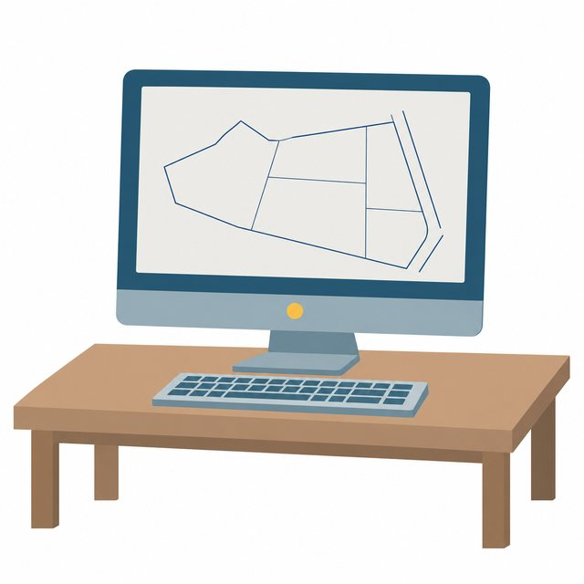
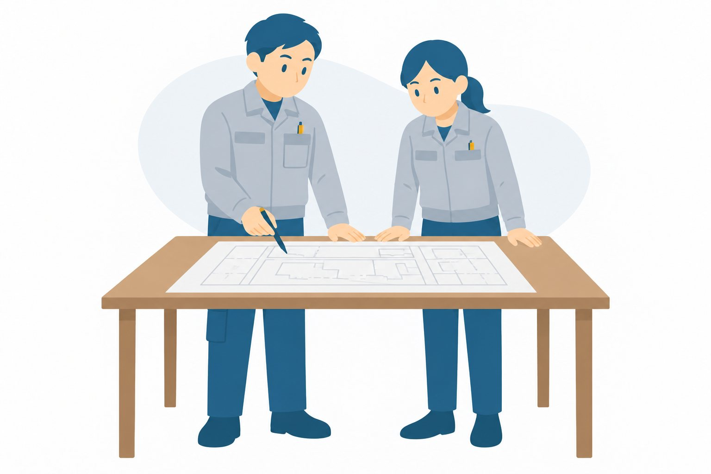

素材をさがす ／ 土地家屋調査士 ／ 書類
二人で図面を確かめる
土地家屋調査士書類場面
この絵について
二人で図面を確かめるところを描いたイラストです。
使い方の例
図面を出す前に確かめる段の説明に使えます。
この絵について要望を送る生成AIのイラストレーターが描き、AIの検品役が確かめた絵です。

素材をさがす ／ 土地家屋調査士 ／ 書類
二人で図面を確かめるところを描いたイラストです。
図面を出す前に確かめる段の説明に使えます。
この絵について要望を送る生成AIのイラストレーターが描き、AIの検品役が確かめた絵です。